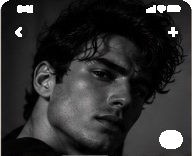

Enzo, 26
São Paulo, SP
- Fashion
- Editorial
- Comercial
- Fitness
- Altura
- 1,84 m
- Peso
- 78 kg
- Manequim
- 42
Sobre mim
Modelo profissional com experiência em campanhas de moda, editoriais e publicidade. Disponível para trabalhos nacionais e internacionais.